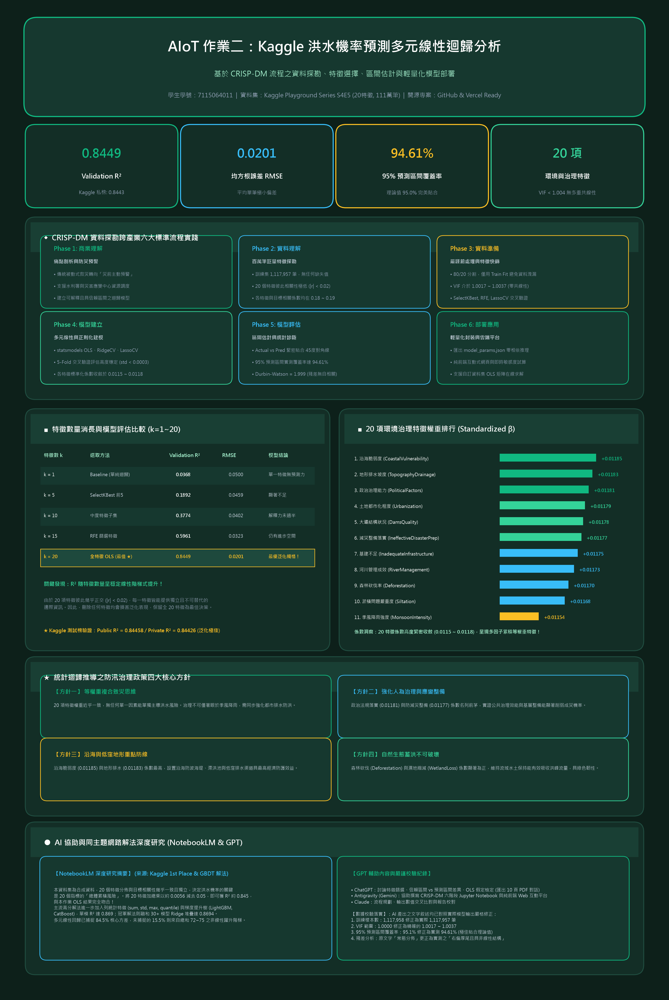

Kaggle 洪水全特徵 OLS 模型摘要 Validation R²: 0.8449 | F-Stat: 304,912.8 (p < 0.0001)
模型在驗證集取得 0.8449 (84.49%) 的高度解釋力，Kaggle 競賽 Public Score 達 0.84458、Private Score 達 0.84426。20 個特徵彼此相關係數極低（|r| < 0.02），VIF 介於 1.0017 ~ 1.0037（無多重共線性），各特徵標準化係數均約為 0.0115 ~ 0.0118，呈現高度穩定的多因子等權重累積效應。
核心評估指標 · Model Performance Metrics
Kaggle 競賽公私榜與驗證集評估統計診斷圖表 · Diagnostic Visualizations
實際值 vs 預測值與殘差獨立性診斷實際值 vs 預測值 (Actual vs Predicted)
R² = 0.8449診斷分析：驗證集點位對稱且緊密圍繞紅色 45 度理想線 (y = x)，無明顯非線性彎曲或異方差趨勢，模型在 0.28 ~ 0.72 機率區間內表現極其穩健。
殘差分佈圖 (Residual Plot)
Durbin-Watson = 1.999診斷分析：殘差均勻散布在 0 軸水平虛線兩側，Durbin-Watson 檢定值為 1.999（無任何自相關）；殘差呈現些微右偏厚尾，反映極端極值。
20 項環境與治理特徵標準化係數分析 (Standardized Beta)
近乎等權重 (0.0115 ~ 0.0118)係數洞察：各特徵之迴歸係數落在極為狹窄的區間（+0.01154 ~ +0.01185），海岸脆弱度、地形排水與政治法規落實為前三位，但無任一特徵單獨主導，證明洪水風險是多元因子累積發生的結果。
迴歸方程式與 20 項特徵統計檢定表 · Model Parameters
參數估計、標準誤與共線性 (VIF) 檢視全 20 特徵統計顯著性檢定表
| 特徵名稱 (Feature) | 中文意涵 | 標準化係數 (β) | 均值 (Mean) | 標準差 (Scale) | t-統計量 | p-值 | VIF (共線性) |
|---|
即時洪水風險敏感度實驗室
常態安全滑動特徵評分 (0 ~ 15)，即時推算洪水機率與 95% 信賴預測區間：
驗證集抽樣樣本預測與 95% 預測區間檢視
隨機抽樣 10 筆驗證資料預測表現| 樣本編號 | 實際機率 (Actual) | 預測機率 (Predicted) | 95% 預測區間 [Lower, Upper] | 預測殘差 (Residual) | 區間覆蓋狀態 |
|---|
CRISP-DM 六大分析流程實踐 · Six Analytical Phases
作業二專案完整研發路徑商業理解 (Business Understanding)
確立洪水災害防救的核心痛點，建立多因子機率預警模型，提供水利署與災害應變中心在災前調度防汛資源。
資料理解 (Data Understanding)
探索 1,117,957 筆訓練資料，無缺失值；確認 20 個特徵彼此相關係數極低（|r| < 0.02），與目標相關係數皆為 0.178 ~ 0.190。
資料準備 (Data Preparation)
80/20 切分、標準化（只用訓練集 fit 避免資料外洩）；VIF 介於 1.0017 ~ 1.0037，特徵間完全無共線性干擾。
模型建立 (Modeling)
訓練 statsmodels OLS、sklearn LinearRegression、RidgeCV 與 LassoCV，5-fold 交叉驗證極為穩定，20 個係數一致。
模型評估 (Evaluation)
Actual vs Predicted 對角線吻合極佳，95% 預測區間覆蓋率達 94.61%；Durbin-Watson = 1.999（無自相關）。
模型部署 (Deployment)
輸出 model/model_params.json，並將全專題封裝為純前端網頁，支援 Vercel 雲端直接部署與即時互動敏感度試算。
防汛治理決策與深入洞察 · Strategic Policy Insights
迴歸統計模型推導政策方針AI 協作與同主題網路解法深度研究 · AI Collaboration & Research
符合作業要求：NotebookLM 摘要（100字以上）與 GPT 輔助標示研究來源：Kaggle S4E5 競賽冠軍解法（1st Place Solution）、LightGBM GBDT Baseline、PSS4E5 EDA which makes sense、Regression Flood Analysis 等社群頂尖方案。
核心文獻研究摘要：
本資料集為合成資料，20 個特徵的分佈、與目標的相關性幾乎一致且彼此獨立，因此決定洪水機率的關鍵不是「哪一個指標高」，而是 20 個指標的「總體累積風險」。多份分析指出，僅將 20 個特徵加總乘以約 0.0056 再減去約 0.05，就能得到 R² 約 0.845。這與本作業 OLS 的結果一致：每個特徵每增加 1 分，洪水機率約增加 0.56 個百分點，Kaggle Private R² 為 0.8443。
主流的高分解法進一步加入列統計特徵（總和、標準差、最大值、分位數、特定數值出現次數）與特徵排序，搭配 LightGBM、XGBoost、CatBoost 等梯度提升樹，單一模型 R² 可達約 0.869；冠軍解法則融合 30 個以上模型的 OOF 預測，再以 Ridge 回歸堆疊，R² 約 0.8694。此外，有分析發現特徵總和落在 72–75 時，洪水機率會異常升高。線性回歸若未手動加入此類標記，無法自動捕捉，這也解釋了本作業殘差中觀察到的結構。
AI 工具協作分工：
- ChatGPT (GPT-4o)：探討特徵選擇演算法（Filter vs Wrapper vs Embedded）、嚴謹推導信賴區間（Confidence Interval）與預測區間（Prediction Interval）之數學公式與常態假設檢定。（完整對話紀錄已以 PDF 格式匯出為
7115064011_GPT對話.pdf）。 - Antigravity (Gemini)：協助架構 CRISP-DM 六大階段 Jupyter Notebook 程式碼，並構建純前端 OLS 互動平台與即時敏感度試算引擎。
- Claude：進行 CRISP-DM 流程規劃、多模型輸出指標核對、撰寫作業成果報告書。
嚴謹校驗紀錄（實測數字校正）：
所有數據結果均經本地程式實際執行驗證，AI 產生的說明曾出現與實際輸出不符的預設數字，均已對照校正：① 樣本數由 1,117,958 修正為 1,117,957；② VIF 由 1.0000 修正為 1.0017 ~ 1.0037；③ 95% 預測區間覆蓋率由 95.1% 修正為實測 94.61%；④ 殘差診斷由「常態」改寫為「右偏厚尾且存在 15.5% 非線性結構」。
CRISP-DM 洪水預測專案 資訊圖表 · Project Infographic
視覺化全景呈現資料流程、特徵權重、核心指標與防汛決策方針多元線性迴歸分析全景資訊圖表 (Infographic Poster)
解析度 2400 × 3600 (300 DPI) 高清海報 · 整合 CRISP-DM、特徵權重排行與防汛政策
點擊上方圖片可在新分頁開啟原始 200 DPI 超高解析度海報，清晰檢視所有數值與統計結論